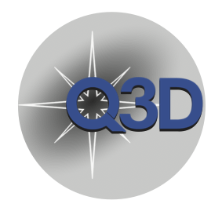

q3dfit¶
{kind=link}
q3dfit is custom software for scientific analysis of integral
field unit (IFU) spectroscopy of quasars and their host galaxies,
specifically aimed at producing science-ready measurements from James
Webb Space Telescope (JWST) IFU spectrographs. q3dfit takes advantage
of the spectral differences between quasars and their host galaxies
for maximal-contrast subtraction of the quasar point-spread function
(PSF) to reveal and characterize the faint extended emission of the
host galaxy. Host galaxy emission is carefully fit with a combination
of stellar continuum, emission and absorption of dust and ices, and
ionic and molecular emission lines.
q3dfit has been tested on both ground-based data and NIRSpec-IFU
ERS data of the quasar SDSSJ165202.64+172852.3 from the Q3D program
(Wylezalek et al. 2022). Testing
with MIRI-IFU data is pending future Q3D observations.
q3dfit developers are:
* David Rupke (Rhodes College, software lead)
* Dominika Wylezalek (University of Heidelberg, PI)
* Nadia Zakamska (Johns Hopkins University, CoPI)
* Sylvain Veilleux (University of Maryland College Park, CoPI)
* Andrey Vayner (Johns Hopkins University, primary developer)
* Caroline Bertemes (Heidelberg, primary developer)
* Yuzo Ishikawa (Johns Hopkins University, primary developer)
* Weizhe Liu (University of Maryland College Park, primary developer)
* Carlos Anicetti (Johns Hopkins University, contributor)
* Grace Lim (Rhodes College, contributor)
* Ryan McCrory (Rhodes College, contributor)
* Anna Murphree (Rhodes College and University of Hawai’i, contributor)
* Lillian Whitesell (Rhodes College, contributor)
Note
If you find a bug or have a feature request, please submit an issue.
Our papers describing q3dfit and all its functionalities are
currently in preparation and the links will be posted here. If you use
this package before these papers are published, kindly cite the
following references:
@MISC{2014ascl.soft09005R,
author = {{Rupke}, David S.~N.},
title = "{IFSFIT: Spectral Fitting for Integral Field Spectrographs}",
keywords = {Software},
year = 2014,
month = sep,
eid = {ascl:1409.005},
pages = {ascl:1409.005},
archivePrefix = {ascl},
eprint = {1409.005},
adsurl = {https://ui.adsabs.harvard.edu/abs/2014ascl.soft09005R},
adsnote = {Provided by the SAO/NASA Astrophysics Data System}
}
@MISC{2021ascl.soft12002R,
author = {{Rupke}, D.~S.~N. and {Schweitzer}, M. and {Viola}, V. and {Lutz}, D. and {Sturm}, E. and {Spoon}, H. and {Veilleux}, S. and {Kim}, D. -C.},
title = "{QUESTFIT: Fitter for mid-infrared galaxy spectra}",
keywords = {Software},
year = 2021,
month = dec,
eid = {ascl:2112.002},
pages = {ascl:2112.002},
archivePrefix = {ascl},
eprint = {2112.002},
adsurl = {https://ui.adsabs.harvard.edu/abs/2021ascl.soft12002R},
adsnote = {Provided by the SAO/NASA Astrophysics Data System}
}
The software is being developed in part as a contribution to the JWST Early Release Science program Imaging Spectroscopy of Quasar Hosts with JWST analyzed with a powerful new PSF Decomposition and Spectral Analysis Package. The website for the project is available here. We acknowledge funding provided by NASA through a contract issued by Space Telescope Science Institute for support of Early Release Science observations with JWST and in-kind contributions by leading and contributing members at the University of Heidelberg, Rhodes College, Johns Hopkins University, and University of Maryland College Park.